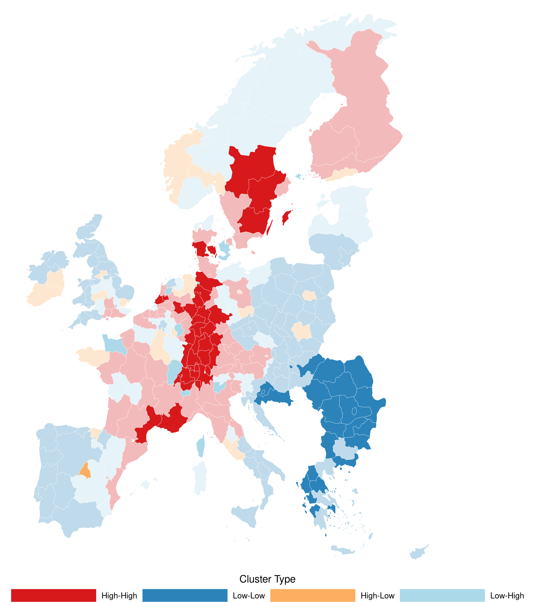

| baseline1 | baseline2 | full1 | full2 | full3 | full4 | |
|---|---|---|---|---|---|---|
| (Intercept) | 0.069*** | 0.070*** | ||||
| (0.002) | (0.001) | |||||
| patent_n | 0.008 | -0.007** | 0.017* | 0.004 | 0.004 | -0.000 |
| (0.007) | (0.002) | (0.008) | (0.003) | (0.003) | (0.002) | |
| relatedness_density | 0.055*** | 0.089*** | 0.028*** | 0.029*** | ||
| (0.002) | (0.006) | (0.002) | (0.002) | |||
| reg_comp | -0.003*** | -0.003*** | -0.001*** | -0.000 | -0.001** | -0.001** |
| (0.001) | (0.001) | (0.000) | (0.000) | (0.000) | (0.000) | |
| tech_comp | -0.015*** | -0.005*** | -0.013*** | -0.004*** | -0.003*** | 0.001*** |
| (0.002) | (0.001) | (0.002) | (0.001) | (0.001) | (0.000) | |
| pred11 | 0.081*** | 0.089*** | 0.086*** | 0.082*** | ||
| (0.002) | (0.002) | (0.002) | (0.002) | |||
| Num.Obs. | 1571364 | 1571364 | 1571364 | 1571364 | 1571364 | 1571364 |
| R2 | 0.043 | 0.086 | 0.046 | 0.092 | 0.093 | 0.097 |
| R2 Adj. | 0.043 | 0.086 | 0.046 | 0.092 | 0.093 | 0.097 |
| R2 Within | 0.014 | 0.062 | 0.062 | 0.030 | ||
| R2 Within Adj. | 0.014 | 0.062 | 0.062 | 0.030 | ||
| AIC | -36976.1 | -109812.6 | -41129.6 | -119089.6 | -120205.8 | -127189.1 |
| BIC | -36914.8 | -109751.3 | -37375.8 | -115335.8 | -116439.6 | -115547.3 |
| RMSE | 0.24 | 0.23 | 0.24 | 0.23 | 0.23 | 0.23 |
| Std.Errors | by: region & tech | by: region & tech | by: region & tech | by: region & tech | by: region & tech | by: region & tech |
| FE: region | X | X | X | X | ||
| FE: year | X | X | X | X | ||
| FE: tech | X | |||||
| + p < 0.1, * p < 0.05, ** p < 0.01, *** p < 0.001 | ||||||
5 Results
In the previous chapter we discussed thoroughly the different areas of interest to this work. We relied on a clear framing that justifies assessing the regional diversification potential in a more contextualised and granular approach. To do that we started from the conceptual constructs of relatedness and the subsequent technology space and introduced our machine learning approach as context-rich alternative. We also introduced our coherence metric that capitalises on our approach. With that we’ve drawn a clear conceptual framework on how all these ideas should interact and inform on our main outcome. Essentially we propose two levels of analysis each with a clear objective but with complementary interpretation. These two analysis are opertaionalised via three models which we described their rational, specifications, and how they meet our hypothesis in the previous chapter. In this chapter we present the results of these models and contrast their interpretation to the hypothesis and the questions this work aims to address.
In here we will decompose our finding for each of the models we specified. We will first explore the results of model 0 (Table 5.1), which treats the benchmark hypothesis and compare the empirical contribution of regional potential and relatedness to regional entry, following a large body of literature we already discussed in the literature review. Then we will present the results of model 1 (Table 5.2) which explores the hypothesis on the empirical contribution of technologies’ roles in the network structure from the FITS network. This model also explores the interaction between these roles and coherence to investigate whether the relationship is universal or contingent on the alignment in industrial embededdess between the region and the technology. Model 1 also extends this exploration by including the national ecosystem covariates (Table 5.3), this to test the stability of the network metric and their interaction as predictive factors, and also as a robustness check for their contribution compared to model 2. Essentially model 1 fits our variables to regional technological potential and assess the within-group variation. But because the national ecosystem covariates are not at a regional level, we also want to assess their contribution when we account for both within-group and between-group variation since regions are administrative artefacts that share the same national ecosystem characteristics. This nested structure motivate our model 2 presented in Table 5.4. As we mentioned in the previous chapter, if the nested structure of model 2 drives most of the variation of the outcome, it could be an indication that this variation is mainly driven by spatial dependence. This is the case as we will explain later in this chapter, thus motivates our model 3. The idea here is to understand the spatial dynamics that drives regional outcomes, the test results presented in the previous chapter indicate a strong dependence on neighbouring region outcome. This justified the inclusion of the SAR model (Table 5.5), albeit we also present the SEM model as a robustness check (Table 5.6)
5.1 Entry
In Table 5.1 we benchmark how much conventional relatedness density and potential (pred11) explain regional entry to a new technology. In the pooled specifications, both measures strongly predict entry: relatedness density is positive and precisely estimated (\(0.055\)), while Potential is larger (\(0.081\)). This is consistent with the interpretation that both capture diversification opportunities, however, Potential here is closer to a feasibility metric that’s learned from portfolio configurations than relatedness. Once we move to the fixed-effects designs and absorb region and year fixed effects, interpretation shifts to within-region changes over time, net of common year shocks. In this setting, relatedness density remains strongly positive (e.g., \(0.089\) in the density-only fixed effects model), and Potential also remains strongly positive (\(0.089\) in the Potential-only fixed effects model). The coefficient of relatedness increase significantly more than potential (which remains relatively at a stable value) when we account for within-group variation in which case both relatedness and potential contribute similarly to the probability of entry. Albeit, potential seems to improve the overall and within-group fit more than potential (within-\(R^2\) rises from \(0.014\) in the density-only fixed effects model to \(0.062\) in the Potential-only fixed effects model). Moreover, when we include both metrics together, the dominance of potential influence becomes clear, the coefficient of relatedness decrease from 8.9% to 2.8%, whereas the coefficient of relatedness remains stable at 8.6%. In other words, Potential appears to be relatively the dominant predictor in this horse race, while density retains residual explanatory content that may reflect a simpler proximity component that survives beyond the non-linear feasibility signal embedded in Potential.
This benchmark motivates the subsequent mechanism analysis: rather than treating relatedness as a sufficient summary statistic, we examine how portfolio alignment, network position, and accessibility structure feasibility. This move is consistent with the broader methodological critique that pairwise relatedness can miss higher-order portfolio information; for example, Tacchella et al. (2023) argues that shifting from “two-product correlations” to information that captures richer configurations can improve predictive performance. This benchmark motivates our subsequent mechanism analysis: having established that Potential is relatively more informative than relatedness density in predicting entry, we now decompose Potential itself to examine how portfolio alignment (coherence), network position (betweenness, eigenvector), and national ecosystem structure feasibility.
5.2 Network Effects and Coherence Moderation
As we mentioned in the beginning of this chapter, one of our main tests in our work is regarding the relationship between the technologies’ network roles and regional technological potential and whether this relationship is universal or dependent on the alignment of industrial structure between regions’ portfolios and a given technology. Table 5.2 portrait one side of the picture that we’re testing here which focuses on the within-group variation.
The first observation here is that all the coefficients maintain the same sign across all specification. The coefficients of betweenness, eigenvector, coherence, and the interactions are the most notably stable in sign and significance with a slight fluctuation in size of the effect.
As a start, column 5 which represent our full specification shows that coherence–the alignment between a technology’s FITS embeddedness and the region’s portfolio–is the strongest predictor of potential (\(0.706\)). Although regional complexity exhibit a similar predictive strength (column 2 and 3), the size of its effect is completely absorbed by the fixed effects.
This aligns with the capabilities-based interpretation of relatedness in evolutionary economic geography which we also adopt for the regional technological potential measure. To this end, Tóth et al. (2022) states that “economic activities are related through sharing various capabilities”. Thus, with this interpretation, potential is the link between diversification and learning. This is theorised to be enabled by “cognitive proximity and interactive learning” following Boschma’s proximity framework. In our setting, coherence operationalizes this shared-capability, portfolio-fit mechanism as it remains stable across specifications. This is also consistent with its interpretation as a structural feasibility correlate rather than a mere modeling artifact.
| baseline | network | interaction_a | interaction_a1 | interaction_b | interaction_b1 | interaction_c | interaction_c1 | |
|---|---|---|---|---|---|---|---|---|
| (Intercept) | -2.528*** | -2.462*** | -2.476*** | -2.516*** | ||||
| (0.070) | (0.074) | (0.074) | (0.071) | |||||
| patent_n | 0.211*** | 0.088*** | 0.213*** | 0.215*** | 0.088*** | 0.091*** | 0.212*** | 0.088*** |
| (0.054) | (0.023) | (0.053) | (0.054) | (0.023) | (0.024) | (0.053) | (0.023) | |
| coherence | 1.026*** | 0.779*** | 0.898*** | 0.909*** | 0.706*** | 0.723*** | 0.944*** | 0.780*** |
| (0.038) | (0.039) | (0.039) | (0.040) | (0.037) | (0.038) | (0.039) | (0.039) | |
| rawdist | -0.028 | -0.039 | -0.011 | -0.029 | 0.036 | 0.009 | ||
| (0.028) | (0.028) | (0.027) | (0.027) | (0.046) | (0.045) | |||
| reg_comp | 0.741*** | 0.013 | 0.746*** | 0.741*** | 0.010 | 0.010 | 0.745*** | 0.013 |
| (0.065) | (0.018) | (0.066) | (0.065) | (0.017) | (0.017) | (0.065) | (0.018) | |
| tech_comp | -0.213*** | -0.256*** | -0.212*** | -0.198*** | -0.254*** | -0.238*** | -0.212*** | -0.255*** |
| (0.035) | (0.040) | (0.035) | (0.034) | (0.039) | (0.038) | (0.035) | (0.040) | |
| betweenness | 0.131*** | 0.249*** | 0.266*** | 0.388*** | 0.407*** | 0.101*** | 0.147*** | |
| (0.023) | (0.039) | (0.040) | (0.037) | (0.038) | (0.028) | (0.029) | ||
| eigenvector | -0.237*** | -0.206*** | -0.201*** | -0.221*** | -0.216*** | -0.209*** | -0.233*** | |
| (0.030) | (0.028) | (0.029) | (0.027) | (0.028) | (0.030) | (0.030) | ||
| betweenness × coherence | -0.184*** | -0.191*** | -0.284*** | -0.292*** | ||||
| (0.032) | (0.033) | (0.030) | (0.031) | |||||
| coherence × eigenvector | -0.015 | -0.001 | -0.001 | 0.013 | ||||
| (0.030) | (0.031) | (0.028) | (0.030) | |||||
| betweenness × rawdist | 0.067 | 0.057 | ||||||
| (0.081) | (0.078) | |||||||
| rawdist × eigenvector | -0.081*** | -0.080*** | ||||||
| (0.023) | (0.023) | |||||||
| Num.Obs. | 1906137 | 1906137 | 1906137 | 1922371 | 1906137 | 1922371 | 1906137 | 1906137 |
| R2 | 0.354 | 0.659 | 0.366 | 0.367 | 0.665 | 0.658 | 0.364 | 0.659 |
| R2 Adj. | 0.354 | 0.659 | 0.366 | 0.367 | 0.665 | 0.658 | 0.364 | 0.659 |
| R2 Within | 0.356 | 0.368 | 0.367 | 0.357 | ||||
| R2 Within Adj. | 0.356 | 0.368 | 0.367 | 0.357 | ||||
| AIC | 7682716.6 | 6466221.8 | 7645396.3 | 7738488.6 | 6429417.5 | 6556534.8 | 7650873.9 | 6461334.5 |
| BIC | 7682791.4 | 6470084.6 | 7645520.9 | 7738600.8 | 6433305.2 | 6560412.7 | 7650998.5 | 6465222.2 |
| RMSE | 1.82 | 1.32 | 1.80 | 1.81 | 1.31 | 1.33 | 1.80 | 1.32 |
| Std.Errors | by: region & tech | by: region & tech | by: region & tech | by: region & tech | by: region & tech | by: region & tech | by: region & tech | by: region & tech |
| FE: year | X | X | X | X | ||||
| FE: region | X | X | X | X | ||||
| + p < 0.1, * p < 0.05, ** p < 0.01, *** p < 0.001 | ||||||||
Similarly, betweenness centrality, our network measure that captures bridging positions (as a proxy classification to general purpose technology role), exhibits consistent and substansive positive effects (\(0.388\)). However, the coherence \(\times\) betweenness interaction is significantly negative (\(-0.284\)). This reveals contextual contingency: bridging positions disproportionately benefit regions with lower coherence, offering catch-up opportunities when portfolios are misaligned with these bridge technologies. Conversely, high-coherence regions gain less from bridging positions. This could suggests that their (high-coherence regions) feasible opportunities are less dependent on bridge roles and more concentrated in already-aligned portions of the technology space1.
This contingency is conceptually consistent with a tension highlighted in Tóth et al. (2022). The study highlights that region-technology interdependencies can transmit “shocks” and that evidence on how regional portfolio structures shape outcomes (the adaptation of the region to the shock in its technology portfolio/network in our case regional potential) is mixed. The interaction results at least for betweenness, is consistent with this assessment: the value of the bridging position to regional potential is context dependent. The internal industrial structure of the region’s portfolio (its knowledge infrastructure) condition the influence of this position.
On the other side of this logic, the eigenvector centrality pattern presents a contrasting story. Technologies occupying authority/prestige positions (as a proxy to key enabling technology roles) consistently inhibit potential (\(-0.221\) in Column 5). Yet its interaction with coherence (coherence \(\times\) eigenvector) shows consistent non-significance. A conservative interpretation here, is that authority-like technologies are systematically difficult to enter regardless of the industrial alignment of the region as captured by coherence. Pinheiro (2025) (among others) argues in this context in favour of these results. The author consider that proximity alone is not a sufficient predictor of diversification. Similarly, Antonietti and Montresor (2021) argues that diversification is “going beyond relatedness” and show that enabling technologies support more exploratory trajectories “only when” they are used by other local technologies. We will return to this idea in the discussion chapter.
Our null moderation for eigenvector centrality is consistent with the idea that adopting enabling technologies is challenging and that the conditions and context for this adoption may not be captured by our coherence measure. For that reason we added the interaction between the network measures and the distance covariate. The interaction between distance and eigenvector is negative and relatively robust (\(-0.080\) in columns 7 and 8). This indicates that authority technologies become particularly difficult when they are also topologically remote from any regional foothold. This mechanism is close to the account in Zhu, Guo, and He (2021), the authors show that diversification is more feasible through stronger, closer links. Our results contextualise this further, as this distance seems more relevant for technologies with enabling roles rather than bridging roles. This contrast can be seen in the insignificant betweenness \(\times\) rawdist interaction. This (limited evidence) aligns with the intuition that general purpose technologies by construct should be accessible as they bridge different areas of the network regardless of the distance in the network.
5.3 National Context and Robustness
In Table 5.3 (and later on in Table 5.4) we extend our framework by incorporating covariates on the national entrepreneurial ecosystem characteristics from the Global Entrepreneurship Index. The idea here is to understand whether these covariates contribute to the variation in regional potential along side the network metrics (and their interactions).
First, we can see in Table 5.3 that across the different specification the inclusion of the entrepreneurial ecosystem covariates does not change the sign, significance nor the size of the effects of the other covariates we explored in Table 5.2. In fact we see a marginal improvements in the goodness of fit (within-\(R^2\) rises from \(0.368\) to \(0.371\) and overall-\(R^2\) from \(0.665\) to \(0.668\)). Although small, this improvement shows that the inclusion of the national entrepreneurial ecosystem covariates is still contributive regardless. This stability supports a cautious conclusion that the coherence and network-position mechanisms are not simply proxies for national institutional variation.
The contribution of these covariates, however, doesn’t show the same consistency across our specification with the exception of “x13_internationalization” and “x9_competition”. This is especially notable when we include the fixed effects. We already briefly discussed in the previous chapter why this could be the case here, and we will return to this point in the discussion chapter.
Regardless, Competition is consistently positive, while internationalization is consistently negative (\(0.088\) and \(-0.082\) respectively in Column 4). Other GEI components show heterogeneous patterns across specifications.
This combination of stable dyadic mechanisms and non-negligible national effects is consistent with the caveat mentioned in Pinheiro (2025) (also in Boschma (2015)), which cautions against treating relatedness metrics as sufficient guides to diversification arguing that institutional and policy context can shape which opportunities are realized. This heterogeneity (regardless of the consistency of competition and internationalization effects), together with the stable core mechanisms that remain consistent constitute one of our main empirical contribution in this work. Consequently and in alignment with these observations in the literature these results provides partial evidence for H3. To explore this further model 3 provides an alternative specification that’s more adequate to the hierarchical structure of the data.
| h0 | h01 | h1 | h2 | h3 | h3 | |
|---|---|---|---|---|---|---|
| (Intercept) | -2.493*** | -2.406*** | -2.480*** | |||
| (0.060) | (0.063) | (0.061) | ||||
| patent_n | 0.181*** | 0.090*** | 0.181*** | 0.090*** | 0.181*** | 0.089*** |
| (0.044) | (0.023) | (0.045) | (0.024) | (0.044) | (0.023) | |
| coherence | 0.884*** | 0.784*** | 0.826*** | 0.709*** | 0.885*** | 0.785*** |
| (0.039) | (0.040) | (0.038) | (0.038) | (0.039) | (0.040) | |
| rawdist | -0.024 | -0.037 | -0.015 | -0.027 | 0.031 | 0.010 |
| (0.030) | (0.030) | (0.029) | (0.029) | (0.046) | (0.045) | |
| reg_comp | 0.519*** | 0.015 | 0.518*** | 0.011 | 0.519*** | 0.015 |
| (0.063) | (0.021) | (0.063) | (0.020) | (0.063) | (0.021) | |
| tech_comp | -0.215*** | -0.243*** | -0.214*** | -0.241*** | -0.214*** | -0.241*** |
| (0.039) | (0.042) | (0.039) | (0.041) | (0.039) | (0.042) | |
| betweenness | 0.104*** | 0.133*** | 0.316*** | 0.398*** | 0.121*** | 0.147*** |
| (0.023) | (0.024) | (0.038) | (0.038) | (0.029) | (0.030) | |
| eigenvector | -0.224*** | -0.240*** | -0.211*** | -0.222*** | -0.220*** | -0.235*** |
| (0.031) | (0.031) | (0.028) | (0.028) | (0.031) | (0.031) | |
| x8_human_capital | -0.132* | 0.044* | -0.134* | 0.044* | -0.132* | 0.044* |
| (0.054) | (0.022) | (0.054) | (0.022) | (0.054) | (0.022) | |
| x9_competition | 0.568*** | 0.087* | 0.573*** | 0.088** | 0.568*** | 0.088* |
| (0.082) | (0.034) | (0.082) | (0.034) | (0.082) | (0.034) | |
| x10_product_innovation | 0.198*** | 0.016 | 0.200*** | 0.017 | 0.198*** | 0.016 |
| (0.056) | (0.018) | (0.056) | (0.018) | (0.056) | (0.018) | |
| x11_process_innovation | 0.235*** | -0.020 | 0.236*** | -0.022 | 0.235*** | -0.020 |
| (0.063) | (0.028) | (0.063) | (0.028) | (0.063) | (0.028) | |
| x12_high_growth | -0.110+ | 0.008 | -0.109+ | 0.009 | -0.110* | 0.008 |
| (0.056) | (0.020) | (0.056) | (0.020) | (0.056) | (0.020) | |
| x13_internationalization | -0.088 | -0.080** | -0.090 | -0.082** | -0.088 | -0.080** |
| (0.054) | (0.029) | (0.054) | (0.029) | (0.054) | (0.029) | |
| x14_risk_capital | 0.109* | -0.035 | 0.109* | -0.035 | 0.109* | -0.035 |
| (0.045) | (0.023) | (0.046) | (0.023) | (0.045) | (0.023) | |
| coherence × betweenness | -0.234*** | -0.292*** | ||||
| (0.031) | (0.031) | |||||
| coherence × eigenvector | -0.006 | 0.002 | ||||
| (0.030) | (0.030) | |||||
| betweenness × rawdist | 0.063 | 0.050 | ||||
| (0.079) | (0.078) | |||||
| rawdist × eigenvector | -0.084*** | -0.082*** | ||||
| (0.024) | (0.024) | |||||
| Num.Obs. | 1506300 | 1506300 | 1506300 | 1506300 | 1506300 | 1506300 |
| R2 | 0.474 | 0.661 | 0.478 | 0.668 | 0.475 | 0.662 |
| R2 Adj. | 0.474 | 0.661 | 0.478 | 0.668 | 0.475 | 0.662 |
| R2 Within | 0.358 | 0.371 | 0.359 | |||
| R2 Within Adj. | 0.358 | 0.371 | 0.359 | |||
| AIC | 5748605.3 | 5088428.5 | 5735734.5 | 5057169.8 | 5745677.7 | 5084204.9 |
| BIC | 5748788.7 | 5092279.4 | 5735942.3 | 5061045.2 | 5745885.6 | 5088080.3 |
| RMSE | 1.63 | 1.31 | 1.62 | 1.30 | 1.63 | 1.31 |
| Std.Errors | by: region & tech | by: region & tech | by: region & tech | by: region & tech | by: region & tech | by: region & tech |
| FE: region | X | X | X | |||
| FE: year | X | X | X | |||
| + p < 0.1, * p < 0.05, ** p < 0.01, *** p < 0.001 | ||||||
5.4 Hierarchical Structure and Spatial Implications
Similar to model 2 portrayed in Table 5.3, model 3 accounts for the same covariates but considers the nested structure if the data. In Table 5.4 employs random effects models where the regions random intercepts are drawn from the same distribution for each country. This matches the hierarchical structure of the data and is appropriate given that the GEI variables are measured at the national level.
Crucially, the core coefficients remain stable in the hierarchical models. In the random effects specification comparable to the fixed effects benchmark, coherence remains positive (around \(0.709\)), betweenness remains positive (around \(0.398\)), and the coherence \(\times\) betweenness interaction remains negative (\(-0.292\)). Eigenvector centrality remains negative (around \(-0.222\)) and its interaction with coherence also remains insignificant. In contrast, distance is more salient in this setting and shows a significant and negative coefficient as a main effect (\(-0.027\)). This could indicate that topological accessibility matters more for cross-regional comparison than for within-region setups. At the same time, its interaction results reinforce the asymmetry we observed earlier in Table 5.3 and Table 5.2. The interaction term rawdist \(\times\) eigenvector term conserve its sign, significance and effect size (\(-0.082\)). This is also the case for the betweenness \(\times\) rawdist interaction which becomes significant with a similar sign and effect size compared to the previous models.
However and more importantly, in this model the national ecosystem covariates are uniformally stable and consistent in sign, significance and effect size. In this model we can see that variation in human capital, competition, product innovation, and high growth pillars are associated at 4%, 9%, 1.6% and 0.8% respectively with the outcome. This is in contrast to process innovation, internationalisation, and risk capital pillars whose variations are negatively associated with the outcome at 2%, 8%, and 3.5% respectively.
These results directly address H3, and relatively confirm the intuition we formalised in this work and the results in the previous model. National entrepreneurial ecosystem characteristics matters for regional potential and explain a significant proportion of the variation (our full specification in column 5 shows the highest marginal and conditional \(R^2\), 0.201 and 0.668 respectively). In fact, this can also be observed in the high intra-class correlation (\(ICC = 0.60\)). This shows that \(60%\) of variance in regional potential is between-group rather than within-group. The variance components show that country-level heterogeneity (standard deviation around \(1.12\)-\(1.13\)) exceeds region-within-country heterogeneity (approximately \(1.02\)–\(1.03\)). These decompositions inform us that, while the fixed effects estimates document robust within-region mechanisms, a substantial portion of the feasibility landscape is structured by relatively persistent differences across countries and regions.
The results of this model also help justify the spatial models that follow. The large \(ICC\) and the variance decompositions indicates that regional potential is strongly structured across places. This confirms our intuition in the previous section as we introduced the rational behind model 2. The nested structure of the dyadic context matters almost as much as the dyadic components themselves. This is to say that the geography of the region (where it is, in which country) is extremely informative of its technological potential. This could justify the idea that feasibility is not independent across space but may be shaped by neighbouring structures. Consequently, the distinction between within-region fixed effects patterns and between-place random effects patterns suggests that part of the remaining heterogeneity may be geographically patterned. This is our main motivation for an explicit test for spatial dependence which is the objective of model 3 that we present its results in the next section.
| inter_a | inter_a1 | inter_b | inter_b1 | h_a | h_b | h_b1 | |
|---|---|---|---|---|---|---|---|
| (Intercept) | -2.577*** | -2.667*** | -2.573*** | -2.666*** | -2.817*** | -2.711*** | -2.807*** |
| (0.088) | (0.087) | (0.088) | (0.088) | (0.227) | (0.230) | (0.227) | |
| patent_n | 0.109*** | 0.108*** | 0.088*** | 0.088*** | 0.090*** | 0.090*** | 0.089*** |
| (0.001) | (0.001) | (0.001) | (0.001) | (0.001) | (0.001) | (0.001) | |
| rawdist | -0.032*** | 0.008*** | -0.029*** | 0.009*** | -0.037*** | -0.027*** | 0.010*** |
| (0.001) | (0.002) | (0.001) | (0.002) | (0.001) | (0.001) | (0.002) | |
| betweenness | 0.427*** | 0.200*** | 0.388*** | 0.147*** | 0.133*** | 0.398*** | 0.147*** |
| (0.002) | (0.001) | (0.002) | (0.001) | (0.001) | (0.002) | (0.001) | |
| coherence | 0.729*** | 0.802*** | 0.706*** | 0.780*** | 0.784*** | 0.709*** | 0.785*** |
| (0.001) | (0.001) | (0.001) | (0.001) | (0.001) | (0.001) | (0.001) | |
| eigenvector | -0.212*** | -0.223*** | -0.221*** | -0.233*** | -0.240*** | -0.222*** | -0.235*** |
| (0.001) | (0.001) | (0.001) | (0.001) | (0.001) | (0.001) | (0.001) | |
| betweenness × coherence | -0.270*** | -0.284*** | |||||
| (0.001) | (0.001) | ||||||
| coherence × eigenvector | 0.000 | -0.001 | 0.002 | ||||
| (0.001) | (0.001) | (0.001) | |||||
| betweenness × rawdist | 0.061*** | 0.057*** | |||||
| (0.004) | (0.004) | ||||||
| rawdist × eigenvector | -0.080*** | -0.080*** | -0.082*** | ||||
| (0.001) | (0.001) | (0.001) | |||||
| reg_comp | 0.010*** | 0.014*** | 0.015*** | 0.011*** | 0.015*** | ||
| (0.001) | (0.001) | (0.002) | (0.002) | (0.002) | |||
| tech_comp | -0.254*** | -0.255*** | -0.243*** | -0.241*** | -0.241*** | ||
| (0.001) | (0.001) | (0.001) | (0.001) | (0.001) | |||
| x8_human_capital | 0.044*** | 0.044*** | 0.044*** | ||||
| (0.003) | (0.003) | (0.003) | |||||
| x9_competition | 0.088*** | 0.088*** | 0.088*** | ||||
| (0.005) | (0.005) | (0.005) | |||||
| x10_product_innovation | 0.016*** | 0.017*** | 0.016*** | ||||
| (0.002) | (0.002) | (0.002) | |||||
| x11_process_innovation | -0.020*** | -0.022*** | -0.020*** | ||||
| (0.004) | (0.004) | (0.004) | |||||
| x12_high_growth | 0.008** | 0.009** | 0.008** | ||||
| (0.003) | (0.003) | (0.003) | |||||
| x13_internationalization | -0.080*** | -0.082*** | -0.080*** | ||||
| (0.003) | (0.003) | (0.003) | |||||
| x14_risk_capital | -0.035*** | -0.034*** | -0.035*** | ||||
| (0.002) | (0.002) | (0.002) | |||||
| coherence × betweenness | -0.292*** | ||||||
| (0.002) | |||||||
| rawdist × betweenness | 0.050*** | ||||||
| (0.004) | |||||||
| SD (Observations) | 1.346 | 1.356 | 1.307 | 1.318 | 1.310 | 1.296 | 1.308 |
| SD (Intercept regioncountry) | 1.029 | 1.036 | 1.028 | ||||
| SD (Intercept country) | 1.124 | 1.135 | 1.123 | ||||
| SD (Intercept region) | 1.497 | 1.489 | 1.513 | 1.499 | |||
| Num.Obs. | 1999432 | 1999432 | 1906137 | 1906137 | 1506300 | 1506300 | 1506300 |
| R2 Marg. | 0.190 | 0.186 | 0.202 | 0.198 | 0.197 | 0.201 | 0.198 |
| R2 Cond. | 0.638 | 0.631 | 0.659 | 0.651 | 0.659 | 0.668 | 0.659 |
| AIC | 6864439.5 | 6894186.6 | 6431985.8 | 6463890.4 | 5090780.3 | 5059555.4 | 5086578.2 |
| BIC | 6864689.6 | 6894436.8 | 6432259.9 | 6464164.5 | 5091110.4 | 5059909.9 | 5086932.7 |
| ICC | 0.6 | 0.5 | 0.6 | 0.6 | 0.6 | 0.6 | 0.6 |
| RMSE | 1.35 | 1.36 | 1.31 | 1.32 | 1.31 | 1.30 | 1.31 |
| + p < 0.1, * p < 0.05, ** p < 0.01, *** p < 0.001 | |||||||
5.5 Role of space
Having established stable dyadic mechanisms at the technology–region level (Tables Table 5.2 and Table 5.3) and substantial between-place heterogeneity in the hierarchical models (Table Table 5.4), we test whether regional potential exhibits spatial dependence. We aggregate potential to region-year means and estimate spatial panel models with \(5\)-nearest-neighbor weights matrices. Tables Table 5.5 and Table 5.6 reveal substantial spatial dependence. In the SAR model, the spatial autoregressive parameter is around \(0.376\) in the interaction specification, indicating that regional potential is positively associated with neighboring regions’ outcomes. In the SEM model, the spatial error parameter is around \(0.420\) in the interaction specification, indicating spatial correlation in unobserved components. These estimates are consistent with the interpretation that spatial context matters for regional feasibility landscapes, whether through spillovers or through correlated shocks and unobservables.
| baseline | network | interaction | |
|---|---|---|---|
| (Intercept) | 0.116*** | 0.136*** | 0.132*** |
| (0.003) | (0.003) | (0.003) | |
| reg_comp | 0.060*** | 0.055*** | 0.054*** |
| (0.003) | (0.003) | (0.003) | |
| patent_count | 0.077*** | 0.062*** | 0.062*** |
| (0.003) | (0.003) | (0.003) | |
| rho | 0.464*** | 0.375*** | 0.376*** |
| (0.015) | (0.016) | (0.016) | |
| avg_coherence | 0.055*** | 0.065*** | |
| (0.003) | (0.003) | ||
| avg_betweenness | -0.009** | 0.009* | |
| (0.003) | (0.004) | ||
| avg_eigenvector | 0.018*** | 0.022*** | |
| (0.003) | (0.003) | ||
| avg_coherence × avg_betweenness | 0.013*** | ||
| (0.002) | |||
| avg_coherence × avg_eigenvector | 0.006*** | ||
| (0.002) | |||
| Num.Obs. | 3223 | 3223 | 3223 |
| Log.Lik. | 4350.51 | 4559.40 | 4578.55 |
| AIC | -8693.02 | -9104.81 | -9139.09 |
| BIC | -8668.71 | -9062.26 | -9084.39 |
| Sigma | 0.161 | 0.149 | 0.148 |
| Res.Var | 0.024 | 0.021 | 0.021 |
| EDF Total | 4 | 7 | 9 |
| + p < 0.1, * p < 0.05, ** p < 0.01, *** p < 0.001 | |||
| This table tests whether regional potential exhibits spatial dependence by aggregating to region-year observations and estimating spatial autoregressive (SAR) models where neighbors' potential directly affects own potential through the spatial lag parameter rho. The large and highly significant spatial lag coefficient rho = 0.38 in the interaction specification) indicates substantial positive spatial autocorrelation: regions tend to exhibit higher potential when neighboring regions also display high potential, even after controlling for regional portfolio characteristics (average coherence, betweenness, eigenvector) and complexity. This spatial interdependence persists in models with region and year fixed effects, ruling out the interpretation that clustering merely reflects stable regional endowments or common temporal shocks-the pattern instead suggests genuine interregional influences such as knowledge spillovers, labor mobility, or demonstration effects that cross administrative borders. The positive signs on average coherence (0.07) and the average eigenvector x coherence interaction (0.006) at the regional aggregate level contrast with some dyadic findings, reflecting a compositional difference: dyadic measures describe the difficulty of entering specific technologies, while regional aggregates describe the overall advantage of portfolios already rich in aligned or well-connected technologies. | |||
The regional aggregate covariates also help interpret the relationship between dyadic feasibility and portfolio-level advantage. Average coherence is positive (about \(0.065\) in the SAR interaction model and \(0.073\) in the SEM interaction model), consistent with the dyadic evidence that alignment is a central feasibility correlate. Average eigenvector centrality of existing portfolios is also positive (about \(0.022\) in SAR and \(0.021\) in SEM), and it interacts positively with average coherence (about \(0.006\) in SAR and \(0.005\) in SEM). This differs in sign from the dyadic eigenvector penalty for candidate technologies (around \(-0.22\)). A conservative reconciliation is that these statistics capture different objects: dyadic eigenvector describes the difficulty of entering an authority-like target technology, whereas average eigenvector of a region’s existing specializations reflects accumulated capabilities embedded in those technologies that may raise overall potential across the opportunity set. This distinction is compatible with the enabling-technology argument in Antonietti and Montresor (2021), which emphasizes that enabling capacities matter when they are embedded and used within the local system, rather than as isolated targets.

A similar distinction applies to betweenness. At the dyadic level, bridge positions are more valuable for low-coherence regions, reflected in the negative coherence \(\times\) betweenness term (around \(-0.28\)). At the regional level, average betweenness is modest in isolation but becomes positive once interacted with average coherence (about \(0.013\) in SAR and \(0.012\) in SEM). This suggests that advantaged portfolios may combine alignment and bridging among what regions already do, while at the margin bridging targets provide relatively greater benefits when alignment is weak. Overall, the spatial results do not overturn the dyadic mechanisms; instead, they indicate that feasibility is also spatially structured, and that portfolio composition at the regional level can be associated with higher average potential even when entry into specific authority targets remains difficult.
| baseline | network | interaction | |
|---|---|---|---|
| (Intercept) | 0.217*** | 0.221*** | 0.217*** |
| (0.006) | (0.005) | (0.005) | |
| reg_comp | 0.060*** | 0.059*** | 0.058*** |
| (0.003) | (0.003) | (0.003) | |
| patent_count | 0.072*** | 0.059*** | 0.059*** |
| (0.003) | (0.003) | (0.003) | |
| delta | 0.522*** | 0.421*** | 0.420*** |
| (0.019) | (0.023) | (0.023) | |
| avg_coherence | 0.063*** | 0.073*** | |
| (0.003) | (0.004) | ||
| avg_betweenness | -0.008** | 0.009* | |
| (0.003) | (0.004) | ||
| avg_eigenvector | 0.017*** | 0.021*** | |
| (0.003) | (0.003) | ||
| avg_coherence × avg_betweenness | 0.012*** | ||
| (0.003) | |||
| avg_coherence × avg_eigenvector | 0.005** | ||
| (0.002) | |||
| Num.Obs. | 3223 | 3223 | 3223 |
| Log.Lik. | 4228.41 | 4443.00 | 4458.15 |
| AIC | -8448.83 | -8871.99 | -8898.31 |
| BIC | -8424.51 | -8829.45 | -8843.61 |
| Sigma | 0.181 | 0.162 | 0.161 |
| Res.Var | 0.025 | 0.023 | 0.022 |
| EDF Total | 4 | 7 | 9 |
| + p < 0.1, * p < 0.05, ** p < 0.01, *** p < 0.001 | |||
| This table estimates a spatial error model (SEM) as a robustness check to distinguish between substantive spatial interdependence (neighbors' outcomes affecting own outcome, as in SAR) and spatially correlated unobservables (common shocks or omitted factors that cluster geographically). The spatial error parameter lambda is positive and significant (0.42 in the interaction specification), indicating that after controlling for observable regional characteristics, residuals remain spatially autocorrelated errors in neighboring regions are correlated rather than independent. However, comparing with the SAR results (@tbl-spatial-sar), the robust Lagrange Multiplier diagnostics reported in the empirical design section favor the SAR specification, suggesting that the primary mechanism is neighbors' potential directly influencing own potential (spillovers) rather than merely shared unobservables. The regional covariate patterns in SEM (average coherence positive, average betweenness positive when interacted with coherence, average eigenvector positive when interacted with coherence) closely mirror those in SAR, confirming that these portfolio-level associations are robust to the choice of spatial specification and that the key substantive finding,spatial clustering of high and low potential regions, does not depend on modeling spatial dependence as a lag versus an error process. | |||
This can also be supported by the coherence \(\times\) eigenvector interaction coefficient which remains insignificant. In this sense, technologies with enabling role are not a predictor of regional potential regardless of the level of industrial coherence to those technologies the region has. We will discuss this further as we progress in this chapter↩︎